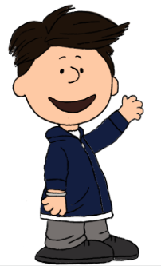

UX Study Overview
This study takes on a less object-centric user experience study but more on the flow of people inside the building. Specifically, this study examines how users navigate up Brown University's Computer Science Building (CIT) using different flow methods. In particular, the various entrances, staircases, and elevators—to reach the 3rd floor. The goal is to understand user behavior, preferences, and challenges so that we can improve the overall wayfinding and user experience in this environment. My motivation for conducting this study is that I, like many other Computer Science students at Brown University, interact with this building on a daily basis and personally found that getting around the builiding feels like navigating through a maze.
Interview Components
The study included contextual interviews with three individuals who regularly use the CIT building. The interview questions were designed to capture their natural behaviors, expectations, and the challenges they face while navigating the building.
Interview Questions
- Can you describe the path you took to get to the 3rd floor and above of CIT today?
- What factors influenced your decision to take that route?
- How often do you take this route when moving around CIT?
- If you had to describe the ideal way to reach the 3rd floor of CIT, what would it look like?
- Have you ever tried using a different route than your usual one? If so, why?
- For people unfamiliar with CIT, do you think it’s easy to figure out how to reach the 3rd floor? Why or why not?
User Interview Summaries
 Dan Haramati
- Took the back staircase from Waterman Street after dropping off items in his office (which is closer to Waterman street side).
- Route choice depended on his starting location (main entrance vs. Waterman Street).
- Uses this route about 80% of the time; alternatives are used when entering building after hours.
- Believes there’s no ideal way. Elevator efficiency varies with class timing and elevator traffic.
- Has tried another staircase route from the second floor but found it less convenient.
- Notes that while the elevator is intuitive, the stairs can be confusing for newcomers.
 Eileen Nolan
Eileen Nolan
- Entered through the main door, took the stairs to the second floor, then the back evacuation stairs to reach the third floor.
- Prefers the stairs in most situations but sometimes opts for elevator when going up with other friends (assumed friends would use elevator).
- Uses the same route every time unless heading to a higher floor with a companion.
- Suggests a single, central staircase would be ideal.
- Has experimented with the other staircase when coming from Thayer Street.
- Believes ease of navigation depends on whether one instinctively goes for the elevator or the stairs.
 Aman Agrawal
Aman Agrawal
- Always takes the elevator to reach the third floor.
- Chooses the elevator as the stairs are perceived to be more complex.
- Uses the elevator every time.
- Ideal solution would be a central elevator located at the main entrance.
- Sometimes uses stairs only to access the second floor.
- Finds the lift easy to use, though the staircase layout is complicated.
Persona Development
Based on these interviews and observations, I synthesized the feedback into empathy maps to capture what users think, feel, say, and do when navigating CIT. This process revealed two key archetypes:
Athletic Alice
Description: A physically active individual who enjoys running and prefers a predictable routine. She consistently opts for the stairs to get extra exercise and avoid delays.

Undecisive Bob
Description: Bob struggles to decide between taking the stairs or the elevator. His indecision and hesitation often lead to delays, making him late.
Storyboard: Undecisive Bob
This storyboard captures Bob’s entire user journey as he navigates CIT, illustrating his moments of indecision and the resulting delays.

From Interviews to Insights
The interviews and observations revealed diverse behaviors and pain points. By analyzing recurring themes—such as the desire for efficiency, frustrations with delays, and the conflict between convenience and physical effort—I crafted empathy maps that capture what users think, feel, say, and do. These insights were distilled into the personas of Athletic Alice and Undecisive Bob, which informed the design of the storyboard for Bob. This process illustrates how empirical feedback can drive user-centered design improvements in real-world navigation scenarios.